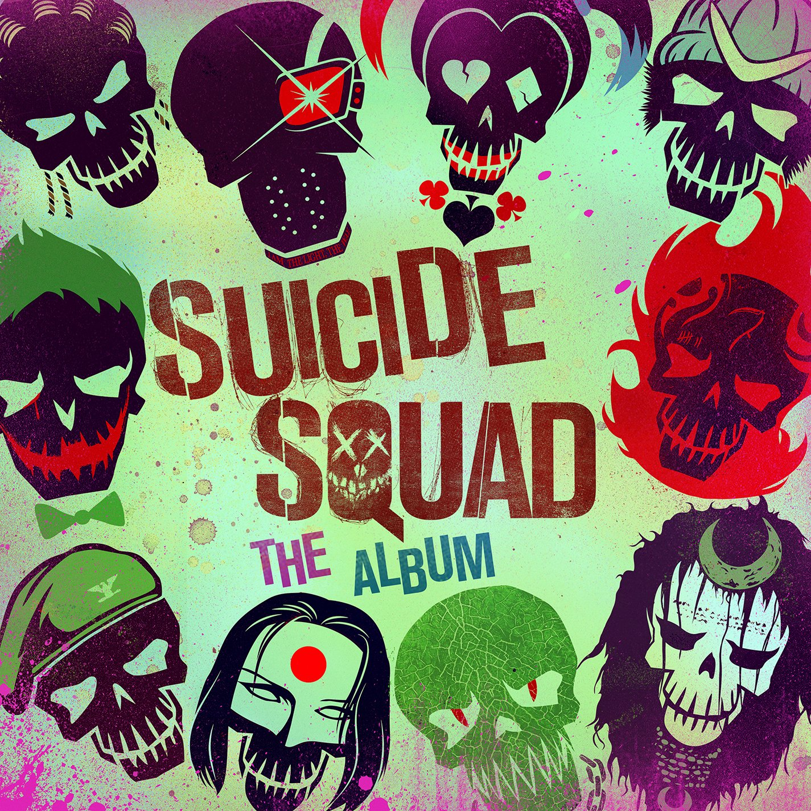

| Año | Sencillo | certificaciones | Album | Logo del album |
| 2012 | «Holding on to You» | EUA: Platino | Vessel | |
| «Guns for Hands» | EUA: Oro |
| 2013 | «Lovely» | --- |
| «House of Gold» | EUA: Platino
RU: Plata1 |
| «Fake You Out» | EUA: Oro |
| 2014 | «Car Radio» | EUA: 2X Platino
RU: Plata |
| 2015 | «Fairly Local» | EUA: Platino
CAN: Oro | Blurryface | |
| «Tear in My Heart» | CAN: Platino
EUA: 2x Platino
RU: Plata |
| «Lane Boy» | CAN: Oro
EUA: Platino
RU: Plata |
| «Stressed Out» | ALE: Platino
AUS: 3× Platino
BEL: 2× Platino
CAN: 8× Platino
DIN: Platino
EUA: 8× Platino
FRA: Diamante
ITA: 4× Platino
NZ: 2× Platino
RU: 2x Platino
SUE: 4× Platino |
| «Ride» | ALE: Platino
AUS: Platino
BEL: Platino
CAN: 5x Platino
DIN: Oro
EUA: 6× Platino
ITA: 2× Platino
NZ: Platino
RU: Platino
SUE: Platino |
| 2016 | «Heathens» | AUS: 2× Platino
BEL: Platino
CAN: 2× Platino
DIN: Platino
EUA: 7× Platino
FRA: Oro
ITA: 2× Platino
NZ: Platino
RU: 2x Platino | Suicide Squad: The Album |  |
| «Heavydirtysoul» | CAN: Platino
EUA: Platino
RU: Plata | Blurryface | |
| 2018 | «Jumpsuit» | CAN: Oro
EUA: Oro | Trench | |
| «Nico and the Niners» | EUA: Oro |
| «Levitate» | ---- |
| «My Blood» | CAN: Oro
EUA: Platino |
| 2019 | «Chlorine» | CAN: Oro
EUA: Platino
RU: Plata |
| «The Hype» | EUA: Oro |
| 2020 | «Level of Concern» | CAN: Oro2
EUA: Platino | Sin álbum | |
| «Christmas Saves the Year» | ----- |
| 2021 | «Shy Away» | ---- | Scaled and Icy |  |